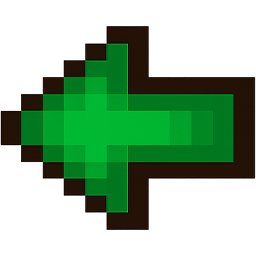

PROJEKTER
Beskrivelse
Jeg har skabt en YouTube-kanal med video essays om spil- og filmbranchen. Indholdet spænder fra analyser af industrikontroverser til trends og markedsføring. Projektet grunder i min passion for medieanalyse, historiefortælling og digital formidling.
Proces
Jeg laver hele produktionen selv: research, manus, optagelse og redigering. Videoerne bygges som essays med kapitler, kilder og visuelle klip. Jeg bruger storytelling, pacing og SEO til at engagere seerne og optimere rækkevidden.
Resultat
Kanalen har rundet 100.000+ visninger på 20+ videoer, hvoraf én nåede over 120.000. Jeg har opbygget erfaring i målrettet indhold, konsistent produktion og stærk publikumsudvikling – kompetencer jeg vil bringe videre i min karriere.